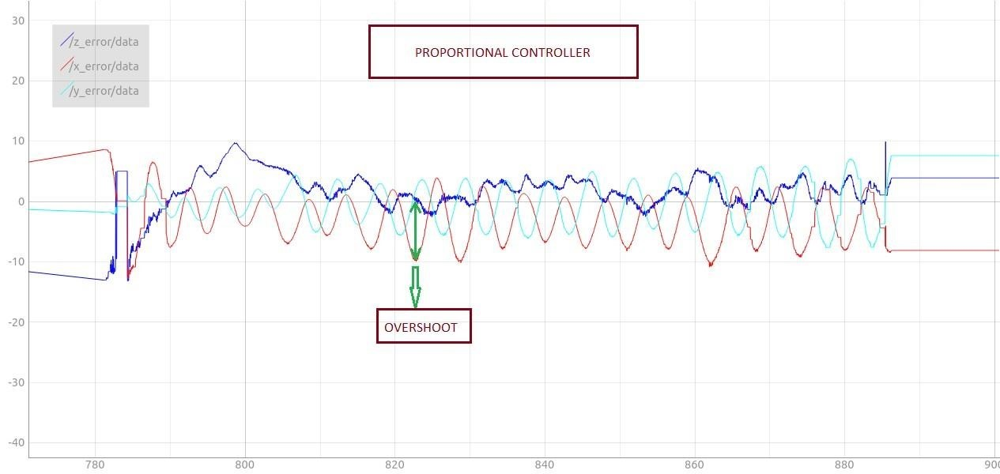
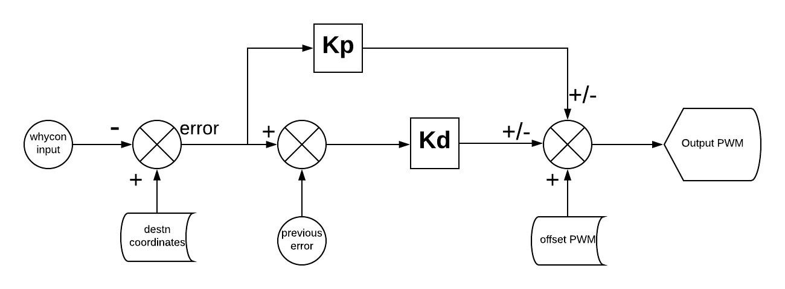
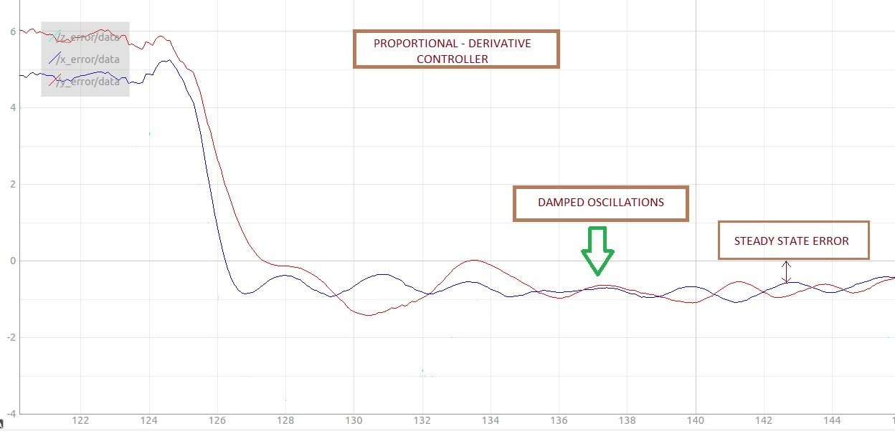
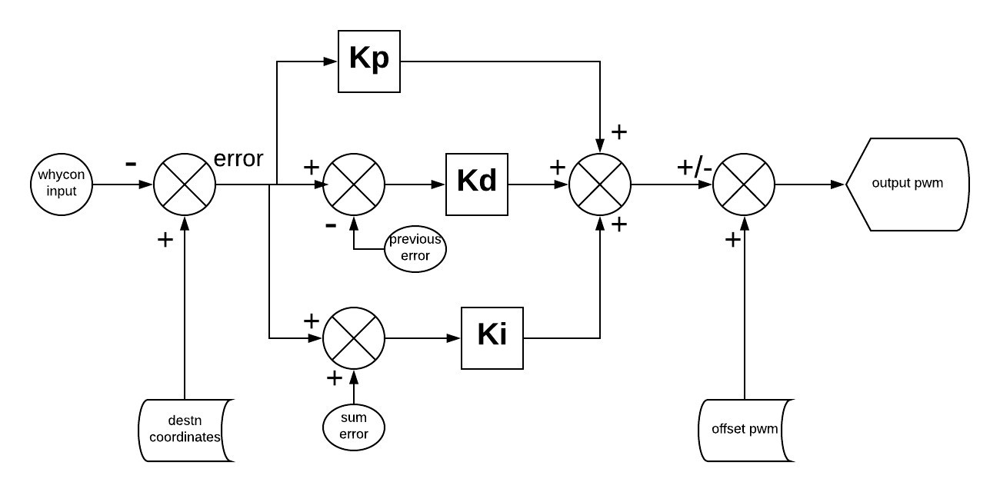
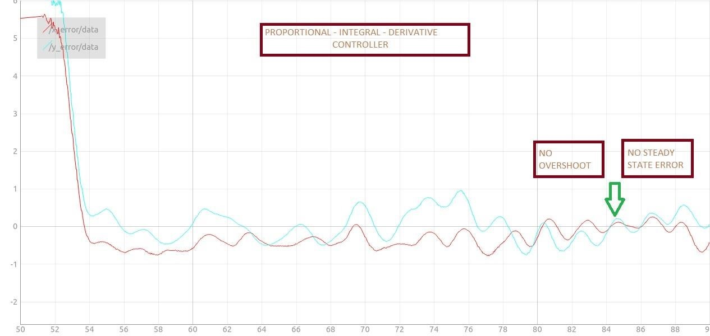
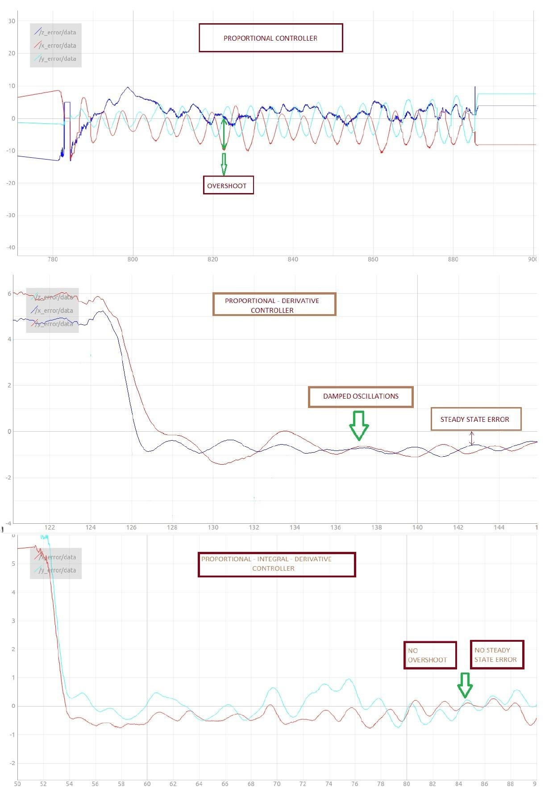

PID Controller
Abstract
Systems can broadly be divided into two types; open loop systems and closed loop systems. An open loop system is also called an uncontrolled system. The output of such a system is not controlled as the system has no feedback. a closed loop system is also called a controlled system. The output of such a system is controlled as it receives feedback. PID is an example of a close loop system. Proportional-integral-derivative (PID) controllers are widely used in industrial systems despite the significant developments of recent years in control theory and technology. They perform well for a wide class of processes. Also, they give robust performance for a wide range of operating conditions and, they are easy to implement using analogue or digital hardware.
Types of Controllers
Proportional Controller (P Controller)
P controller is mostly used in first order processes with single energy storage to stabilize the unstable process. The main usage of the P controller is to decrease the steady state error of the system. As the proportional gain factor K increases, the steady state error of the system decreases. However, despite the reduction, P control can never manage to eliminate the steady state error of the system. As we increase the proportional gain, it provides smaller amplitude and phase margin, faster dynamics satisfying wider frequency band and larger sensitivity to the noise. We can use this controller only when our system is tolerable to a constant steady state error. In addition, it can be easily concluded that applying P controller decreases the rise time and after a certain value of reduction on the steady state error, increasing K only leads to overshoot of the system response. P control also causes oscillation if sufficiently aggressive in the presence of lags and/or dead time. The more lags (higher order), the more problem it leads. Plus, it directly amplifies process noise.
Proportional Derivative Controller (PD Controller)
The aim of using P-D controller is to increase the stability of the system by improving control since it has an ability to predict the future error of the system response. In order to avoid effects of the sudden change in the value of the error signal, the derivative is taken from the output response of the system variable instead of the error signal. Therefore, D mode is designed to be proportional to the change of the output variable to prevent the sudden changes occurring in the control output resulting from sudden changes in the error signal. In addition D directly amplifies process noise therefore D-only control is not used.
Proportional Integral Derivative (PID Controller)
P-I-D controller has the optimum control dynamics including zero steady state error, fast response (short rise time), no oscillations and higher stability. The necessity of using a derivative gain component in addition to the PI controller is to eliminate the overshoot and the oscillations occurring in the output response of the system.
P Controller
A P controller consists of only a linear gain Kp. The output of such controller can be simply given as
output = Kp * error
Observations
It was observed that the drone never settled at its destination. Instead it oscillated about its destination. The higher the value of Kp the more the amplitude of the oscillation and the drone would be out of the flying zone. Below is a plot between error in x, y, and z coordinates and time. Clearly it is visible that the drone was not able to stabilize itself at the destination.
PD Controller
In the previous section we saw how the P-Controller wasn’t successful in stabilizing the system at a given point. It was observed that there were oscillations instead. These oscillations can be damped by using a differential gain along with the P-Controller. The system as a whole is said to be a PD Controller
The differential gain Kd is multiplied with the difference of error and previous error. Previous error is a variable that holds the last error generated by the controller output. The controller output in this case is given as
output = Kp * error + Kd * (error - previous error)
Note, that Kd is calculated keeping the sampling time in consideration. This output will be further added or subtracted to the offset output as the need be to give the final output.
Observations
The results of this controller was no match to the P-controller. The oscillations were damped with change in time. Here is a plot of error and time for a PD controller implemented a system.
But, there was a hitch! On having a closer look it was observed that though the drone could hover with respectable stability, it did not do so over the correct point, i.e the drone did not reach its destination instead it would hover at a point near to the destination. This slight error is known as the steady state error. Hence, it was concluded that a PD controller also by itself wasn’t able to stabilise the drone at the correct destination.
PID Controller
In the previous section we saw how a PD controller was not quite enough. In order to minimise the steady state error we introduce another gain called Ki ,the integral gain. Such a system is said to be a PID Controller
Here in we keep track of the error over time i.e. sum up the errors over a specified sampling time.
Iterm = (Iterm + error) * Ki
Further explanation regarding implementation of this Iterm is given in the code. Note that Ki is calculated keeping the sampling time in consideration. This output will be further added or subtracted to the offset pwm as the need be to give the final output.
output = Kp*error + Iterm + Kd*(error - previous error)
Observations
The PID controller was successful in hovering the drone above the destination point with minimal error.
It overcome the steady state error which was noticeable in previous controllers. Here is a plot of error and time for a PID controller implemented on the Pluto drone.
To sum it up
References
Please refer to the following video tutorials for a more detailed explanation: